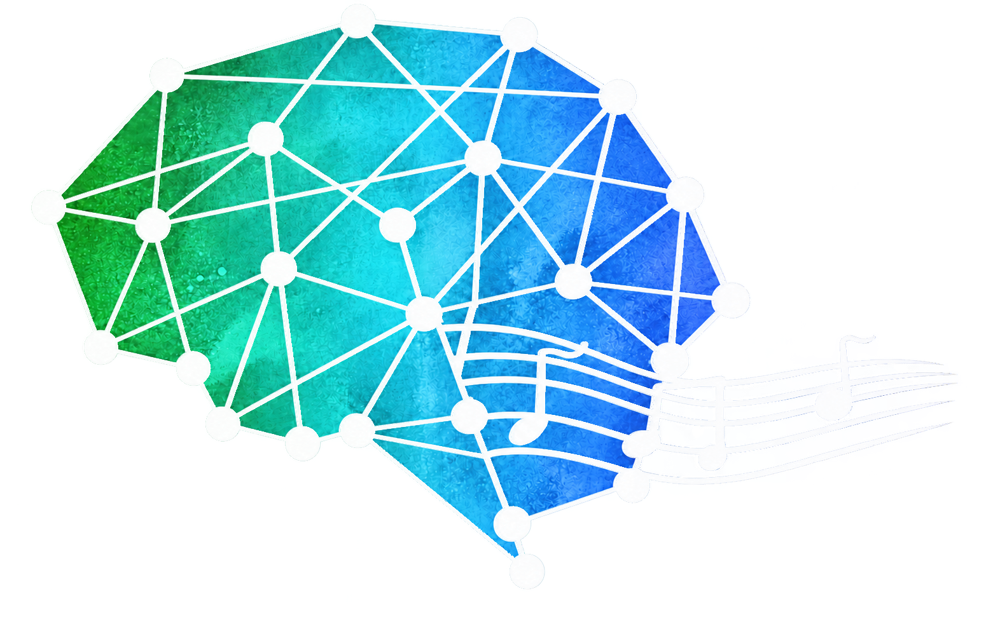

Jamal A. Williams
Computational and cognitive neuroscience of music, memory, and perception.


My work focuses on the computational and neural mechanisms underlying human memory and perception, particularly as they relate to music. I use music as a naturalistic stimulus to investigate how the brain processes, segments, and recalls complex auditory experiences, offering insights into broader questions of event perception and memory formation.
I earned my Ph.D. in Neuroscience from Princeton University in 2023, where I worked with Kenneth Norman, Uri Hasson, and Elizabeth Margulis. My doctoral research examined the neural dynamics of music event segmentation and music-evoked memory reactivation using functional magnetic resonance imaging and computational modeling.
I am currently a postdoctoral fellow at the Massachusetts Institute of Technology, working with Josh McDermott. My postdoctoral work explores the computational principles underlying musical expectation and prediction: how the brain generates, updates, and responds to auditory expectations.
My research combines brain imaging with computational modeling to understand the neural coding of complex, temporally structured stimuli and its relationship to perception, memory consolidation, and prediction. Outside the lab, I am a musician, producer, and DJ, and I enjoy film and traveling.